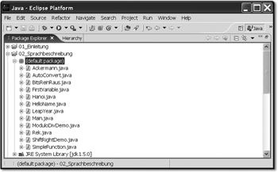

3.6 Kompilationseinheiten, Imports und Pakete schnüren
Ein Paket ist eine Gruppe thematisch zusammengehöriger Typen. Pakete könnten Unterpakete besitzen, die in der Angabe durch einen Punkt getrennt werden. Die Gruppierung lässt sich sehr gut an der Java-Bibliothek beobachten, wo zum Beispiel eine Klasse File und RandomAccessFile dem Paket java.io angehören, denn Dateien und Möglichkeiten zum wahlfreien Zugriff auf Dateien gehören eben zur Ein-/Ausgabe. Ein Punkt und ein Polygon, repräsentiert durch die Klassen Point und Polygon, gehören in das Paket für grafische Oberflächen, und das ist das Paket java.awt.
Die Paketnamen java, javax
Die Klassen der Standardbibliothek sitzen in Paketen, die mit java und javax beginnen. So befindet sich java.awt.Point in einem Paket der Standardbibliothek, was durch den Teil java zu erkennen ist. Wenn jemand eigene Klassen in Pakete mit dem Präfix java setzen würde, etwa java.ui, würde er damit Verwirrung stiften, da nicht mehr nachvollziehbar ist, ob das Paket Bestandteil jeder Distribution ist. Klassen, die mit javax beginnen, müssen nicht zwingend zur Java SE gehören, aber dazu folgt mehr in Abschnitt 11.1.1, »Übersicht über die Pakete der Standardbibliothek«.
3.6.1 Volle Qualifizierung und import-Deklaration
Um die Klasse Point, die im Paket java.awt liegt, außerhalb des Pakets java.awt zu nutzen – und das ist für uns Nutzer immer der Fall –, muss sie dem Compiler mit der gesamten Paketangabe bekannt gemacht werden. Hierzu reicht der Klassenname allein nicht aus, denn es kann ja sein, dass der Klassenname mehrdeutig ist und eine Klassendeklaration in unterschiedlichen Paketen existiert. (In der Java-Bibliothek gibt es dazu einige Beispiele, etwa java.util.Date und java.sql.Date.)
Um dem Compiler die präzise Zuordnung einer Klasse zu einem Paket zu ermöglichen, gibt es zwei Möglichkeiten: Zum einen lassen sich die Typen voll qualifizieren, wie wir das bisher getan haben. Eine alternative und praktischere Möglichkeit besteht darin, den Compiler mit einer import-Deklaration auf die Typen im Paket aufmerksam zu machen:
|
Listing 3.6: AwtWithoutImport.java
|
Listing 3.7: AwtWithImport.java import java.awt.Point; |
Während der Quellcode auf der linken Seite die volle Qualifizierung verwendet und jeder Verweis auf einen Typ mehr Schreibarbeit kostet, ist im rechten Fall beim import nur der Klassenname genannt und die Paketangabe in ein import »ausgelagert«. Kommt der Compiler zu einer Anweisung wie Point p = new Point();, findet er die Deklaration einer Klasse Point im Paket java.awt und kennt damit die für ihn unabkömmliche absolute Qualifizierung.
| Hinweis |
|
Die Typen aus java.lang sind automatisch importiert, sodass zum Beispiel ein import java.lang.String; nicht nötig ist. |
3.6.2 Mit import p1.p2.* alle Typen eines Pakets erreichen
Greift eine Java-Klasse auf mehrere andere Typen des gleichen Pakets zurück, kann die Anzahl der import-Deklarationen groß werden. In unserem Beispiel nutzen wir mit Point und Polygon nur zwei Klassen aus java.awt, aber es lässt sich schnell ausmalen, was passiert, wenn aus dem Paket für grafische Oberflächen zusätzlich Fenster, Beschriftungen, Schaltflächen, Schieberegler und so weiter eingebunden werden. Die Lösung in diesem Fall ist ein *, das das letzte Glied in einer import-Deklaration sein darf:
import java.awt.*;
import java.io.*;
Mit dieser Syntax kennt der Compiler alle Typen im Paket java.awt und java.io, sodass eine Klasse Point und Polygon genau bekannt ist, wie auch die Klasse File.
| Hinweis |
|
Das * ist nur in der letzten Hierarchie erlaubt und gilt immer für alle Typen in diesem Paket. Syntaktisch falsch sind: import *; // |
|
Die import-Deklaration bezieht sich nur auf ein Verzeichnis (in der Annahme, dass die Pakete auf das Dateisystem abgebildet werden) und schließt die Unterverzeichnisse nicht mit ein. |
 Syntax error on token "*", Identifier expected
Syntax error on token "*", Identifier expectedDas * verkürzt zwar die Anzahl der individuellen import-Deklarationen, es ist aber gut, zwei Dinge im Kopf zu behalten:
- Falls zwei unterschiedliche Pakete einen gleichlautenden Typ beherbergen, etwa Date in java.util und java.sql, so kommt es bei der Verwendung des Typs zu einem Übersetzungsfehler. Hier muss voll qualifiziert werden.
- Die Anzahl der import-Deklarationen sagt etwas über den Grad der Komplexität aus. Je mehr import-Deklarationen es gibt, desto größer werden die Abhängigkeiten zu anderen Klassen, was im Allgemeinen ein Alarmzeichen ist. Zwar zeigen grafische Tools die Abhängigkeiten genau an, doch ein import * kann diese erst einmal verstecken.
3.6.3 Hierarchische Strukturen über Pakete
Ein Java-Paket ist eine logische Gruppierung von Klassen. Pakete lassen sich in Hierarchien ordnen, sodass in einem Paket wieder ein anderes Paket liegen kann; das ist genauso wie bei der Verzeichnisstruktur des Dateisystems. In der Standardbibliothek ist das Paket java ein Hauptzweig, aber das gilt auch für javax. Unter dem Paket java liegen dann zum Beispiel die Pakete awt und util, und unter javax liegen dann swing und sonstige Unterpakete.
Die zu einem Paket gehörenden Klassen befinden sich normalerweise[99](Ich schreibe »normalerweise«, da die Paketstruktur nicht zwingend auf Verzeichnisse abgebildet werden muss. Pakete könnten beispielsweise vom Klassenlader aus einer Datenbank gelesen werden. Im Folgenden wollen wir aber immer von Verzeichnissen ausgehen.) im gleichen Verzeichnis. Der Name des Pakets ist dann gleich dem Namen des Verzeichnisses (und natürlich umgekehrt). Statt des Verzeichnistrenners (etwa »/« oder »\«) steht ein Punkt.
Nehmen wir folgende Verzeichnisstruktur mit einer Hilfsklasse an:
com/tutego/
com/tutego/DatePrinter.class
Hier ist der Paketname com.tutego und somit der Verzeichnisname com/tutego/. Umlaute und Sonderzeichen sollten vermieden werden, da sie auf dem Dateisystem immer wieder für Ärger sorgen. Aber Bezeichner sollten ja sowieso immer auf Englisch sein.
Der Aufbau von Paketnamen
Prinzipiell kann ein Paketname beliebig sein, doch Hierarchien bestehen in der Regel aus umgedrehten Domänennamen. Aus der Domäne zur Webseite http://tutego.com wird also com.tutego. Diese Namensgebung gewährleistet, dass Klassen auch weltweit eindeutig bleiben. Ein Paketname wird in aller Regel komplett kleingeschrieben.
3.6.4 Die package-Deklaration
Um die Klasse DatePrinter in ein Paket com.tutego zu setzen, müssen zwei Dinge gelten:
- Sie muss sich physikalisch in einem Verzeichnis befinden, also in com/tutego/.
- Der Quellcode enthält zuoberst eine package-Deklaration.
Die package-Deklaration muss ganz am Anfang stehen, sonst gibt es einen Übersetzungsfehler (selbstverständlich lassen sich Kommentare vor die package-Deklaration setzen):
Listing 3.8: com/tutego/DatePrinter.java
package com.tutego;
import java.util.Date;
public class DatePrinter
{
public static void printCurrentDate()
{
System.out.printf( "%tD%n", new Date() );
}
}
Hinter die package-Deklaration kommen wie gewohnt import-Anweisungen und die Typdeklarationen.
Um die Klasse zu nutzen, bieten sich wie bekannt zwei Möglichkeiten: einmal über die volle Qualifizierung und einmal über die import-Deklaration. Die erste Variante:
Listing 3.9: DatePrinterUser1.java
public class DatePrinterUser1
{
public static void main( String[] args )
{
com.tutego.DatePrinter.printCurrentDate(); // 05/31/11
}
}
Und die Variante mit der import-Deklaration:
Listing 3.10: DatePrinterUser2.java
import com.tutego.DatePrinter;
public class DatePrinterUser2
{
public static void main( String[] args )
{
DatePrinter.printCurrentDate(); // 05/31/11
}
}
3.6.5 Unbenanntes Paket (default package)
Falls eine Klasse ohne Paket-Angabe implementiert wird, befindet sie sich standardmäßig im unbenannten Paket (engl. unnamed package) oder Default-Paket. Es ist eine gute Idee, eigene Klassen immer in Paketen zu organisieren. Das erlaubt auch feinere Sichtbarkeiten, und Konflikte mit anderen Unternehmen und Autoren werden vermieden. Es wäre ein großes Problem, wenn a) jedes Unternehmen unübersichtlich alle Klassen in das unbenannte Paket setzt und dann b) versucht, die Bibliotheken auszutauschen: Konflikte wären vorprogrammiert.


Abbildung 3.7: Das Verzeichnis »default package« steht in Eclipse für das unbenannte Paket.
Eine im Paket befindliche Klasse kann jede andere sichtbare Klasse aus anderen Paketen importieren, aber keine Klassen aus dem unbenannten Paket. Nehmen wir Chocolate im Paket com.tutego und Sugar im unbenannten Paket an:
Sugar.class
com/tutego/Chocolate.class
Die Klasse Chocolate kann Sugar nicht nutzen, da Klassen aus dem unbenannten Paket nicht für Unterpakete sichtbar sind. Nur andere Klassen im unbenannten Paket können Klassen im unbenannten Paket nutzen.
Stände nun Sugar in einem Paket – was auch ein Oberpaket sein kann! –, so wäre das wiederum möglich, und Chocolate könnte Sugar importieren.
com/Sugar.class
com/tutego/Chocolate.class
3.6.6 Klassen mit gleichen Namen in unterschiedlichen Paketen *
Ein Problem gibt es bei mehreren gleich benannten Klassen in unterschiedlichen Paketen. Hier ist eine volle Qualifizierung nötig. So gibt es in den Paketen java.awt und java.util eine Liste. Ein einfaches import java.awt.* und java.util.* hilft da nicht, weil der Compiler nicht weiß, ob die GUI-Komponente oder die Datenstruktur gemeint ist. Auch sagt ein import nichts darüber aus, ob die Klassen in der importierenden Datei jemals gebraucht werden. Das Gleiche gilt für die Klasse Date, die einmal in java.util und einmal in java.sql zu finden ist. Lustigerweise erweitert java.sql.Date die Klasse java.util.Date. Dass der Compiler hier nicht durcheinanderkommt, ist ganz einfach dadurch zu erklären, dass er die Klassen nicht nur anhand ihres Namens unterscheidet, sondern vielmehr auch anhand ihrer Pakete. Der Compiler betrachtet intern immer eine volle Qualifizierung.
3.6.7 Compilationseinheit (Compilation Unit)
Die package- und import-Deklarationen gehören nicht wirklich zu der Typdeklaration, die nur ein class C { } oder verwandte Typdeklarationen umfasst. Genau genommen sind dies alles Bestandteile einer Compilationseinheit (Compilation Unit). So besteht eine Compilationseinheit aus höchstens einer Paketdeklaration, beliebig vielen import-Deklarationen und beliebig vielen Typdeklarationen. Ein Paket ist letztendlich eine Sammlung aus Compilationseinheiten.
3.6.8 Statischer Import *
Das import hat in Java die Bedeutung, den Compiler über die Pakete zu informieren, sodass eine Klasse nicht mehr voll qualifiziert werden muss, wenn sie im import-Teil explizit aufgeführt wird oder wenn das Paket der Klasse genannt ist.
Falls eine Klasse statische Methoden oder Konstanten vorschreibt, werden ihre Eigenschaften immer über den Klassennamen angesprochen. Es gibt nun mit dem statischen Import die Möglichkeit, die Klasseneigenschaften wie eigene statische Methoden oder Variablen ohne Klassennamen sofort zu nutzen.
Praktisch ist das zum Beispiel für die Bildschirmausgabe, wenn die statische Variable out aus System eingebunden wird:
import static java.lang.System.out;
Bei der sonst üblichen Ausgabe über System.out.printXXX() kann nach dem statischen Import der Klassenname entfallen, und es bleibt beim out.printXXX():
Listing 3.11: StaticImport.java
import static java.lang.System.out;
import static javax.swing.JOptionPane.showInputDialog;
import static java.lang.Integer.parseInt;
import static java.lang.Math.max;
import static java.lang.Math.min;
class StaticImport
{
public static void main( String[] args )
{
int i = parseInt( showInputDialog( "Erste Zahl" ) );
int j = parseInt( showInputDialog( "Zweite Zahl" ) );
out.printf( "%d ist größer oder gleich %d.%n",
max(i, j), min(i, j) );
}
}
Mehrere Typen statisch importieren
Der statische Import
import static java.lang.Math.max;
import static java.lang.Math.min;
bindet die statische max()/min()-Methode ein. Besteht Bedarf an weiteren statischen Methoden, gibt es neben der individuellen Aufzählung eine Wildcard-Variante:
import static java.lang.Math.*;
Auch wenn Java seit Version 5 diese Möglichkeit bietet, sollte der Einsatz maßvoll erfolgen. Die Möglichkeit der statischen Importe wird dann nützlicher, wenn Klassen Konstanten nutzen wollen.
| Hinweis |
|
Eine Objektmethode aus der eigenen Klasse überdeckt statische importierte Methoden, was im Fall der toString()-Methode auffällt, die statisch aus der Utility-Klasse Arrays eingebunden werden kann. Der Compiler interpretiert toString() als Aufruf einer Objektmethode (auch dann, wenn die aufrufende Methode selbst statisch ist). |
3.6.9 Eine Verzeichnisstruktur für eigene Projekte *
Neben der Einteilung in Pakete für das eigene Programm ist es auch sinnvoll, die gesamte Applikation in verschiedenen Verzeichnissen aufzubauen. Im Allgemeinen finden sich drei wichtige Hauptverzeichnisse: src für die Quellen, lib für externe Bibliotheken, auf die das Programm aufbaut, und bin (oder build) für die erzeugten Klassen-Dateien. Das Verzeichnis src lässt sich noch weiter unterteilen, etwa für Quellen, die Testfälle implementieren, oder für Beispiele:
src/
core/
examples/
test/
lib/
bin/
Mehr Anregungen zur Verzeichnisstruktur gibt die Webseite http://java.sun.com/blueprints/code/projectconventions.html.
Ihr Kommentar
Wie hat Ihnen das <openbook> gefallen? Wir freuen uns immer über Ihre freundlichen und kritischen Rückmeldungen.
 Jetzt bestellen
Jetzt bestellen


{kind=link}